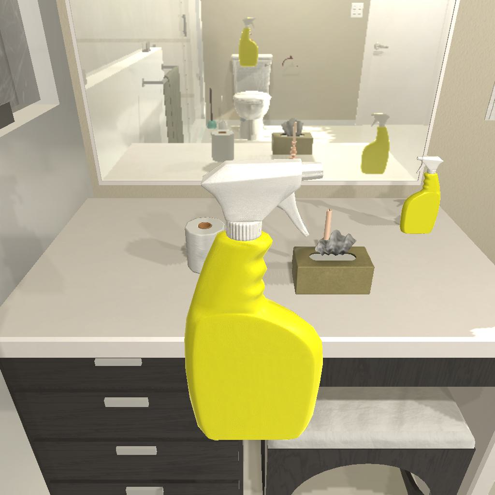

---------------------------------------------------------task: 28---------------------------------------------------------
--------------------------------------------------------------------------------------------------------------------------------------------------------------------
--------------------------------------------------------------------------------------------------------------------------------------------------------------------
Step:--------------------------------------------------------------------------11-------------------------------------------------------------------------------
----------------------------------------
VLM Prompt:
Image1:
**Instruction**
1. Analyze the provided image to identify all visible household objects, focusing on those relevant to the task description "find two spraybottle and put them in toilet."
2. Use the analysis of the image and the task hint "The agent must find an object of the desired type, pick it up, find the correct location to place it, put it down there, then look for another object of the desired type, pick it up, return to previous location, and put it down there with the other object." to answer the question: what is the most reasonable action in the choices for the task description "find two spraybottle and put them in toilet"?
4. Decide and write the answer using the template: The answer is: (i): , where i is the real number. If there is no desired object in the image, search every place based on **Initial Observation** to find the object. And if no one is exactly correct, choose a similar answer.
**Initial Observation**
You are in the middle of a room. Looking quickly around you, you can see bathtub (1), bathtubbasin (1), cart (1), sink (1), garbagecan (1), sinkbasin (1), countertop (1), drawer (1-4), toilet (1), toiletpaperhanger (1)
**Answer Choices**
(1): go to bathtub 1
(2): go to bathtubbasin 1
(3): go to cart 1
(4): go to sink 1
(5): go to garbagecan 1
(6): go to sinkbasin 1
(7): go to drawer 2
(8): go to drawer 3
(9): go to drawer 4
(10): go to toilet 1
(11): go to toiletpaperhanger 1
(12): put spraybottle 1 in/on countertop 1
(13): examine spraybottle 1
(14): examine countertop 1
**Answer**
Let's think step by step by following the instructions.
----------------------------------------
----------------------------------------
Original Response:
First, we need to identify all visible household objects relevant to the task description. In the image, we can see one yellow spray bottle in the foreground and another one reflected in the mirror. These are the objects we need to find and put in the toilet.
Following the task hint, the agent must first find one spray bottle, pick it up, then find the toilet and put it down there. After that, the agent needs to find the second spray bottle, pick it up, return to the toilet, and put it down with the other object.
Based on the **Initial Observation** list, the toilet is already identified as an item in the room.
The most reasonable action from the choices would be to go to the toilet first to put down the first spray bottle. So the answer is:
The answer is: (10): go to toilet 1
----------------------------------------
----------------------------------------
>>> Refine Original VLM Response and Get Pure Action: go to toilet 1
----------------------------------------
-----------------------------------------------------------------
Running time: 7.5444676876068115 seconds
Total Money: 10.081760000000001
-----------------------------------------------------------------
-----------------------------------------------------------------
Text Observation:You arrive at loc 11. On the toilet 1, you see a showerdoor 1, and a soapbottle 2.
-----------------------------------------------------------------
UNSUCCEED